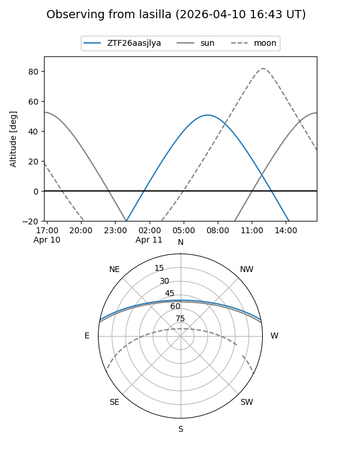
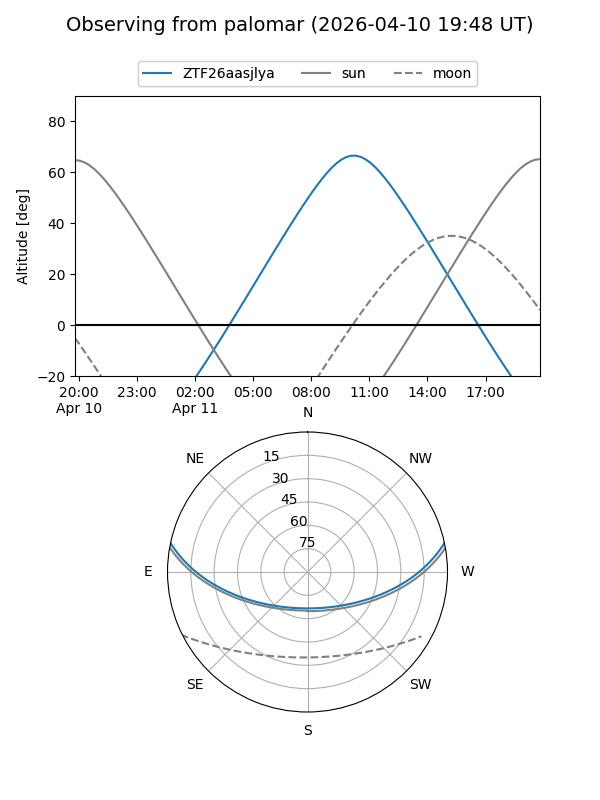

ZTF26aasjlya
Target ZTF26aasjlya at 2026-04-10 13:26
Aliases and brokers:
FINK: link
Lasair: link
ALeRCE: link
alt names
ZTF26aasjlya (ztf,fink_ztf)
Coordinates:
equatorial (ra, dec) = 235.4549,+10.05243
equatorial (HMS+DMS) = 15:41:49.18,+10:03:08.76
galactic (l, b) = (18.2046,+46.44386)
Flags:
Photometry:
last ztfg=18.86
1 ztfg detections
Lightcurve
Visibility


Additional plots